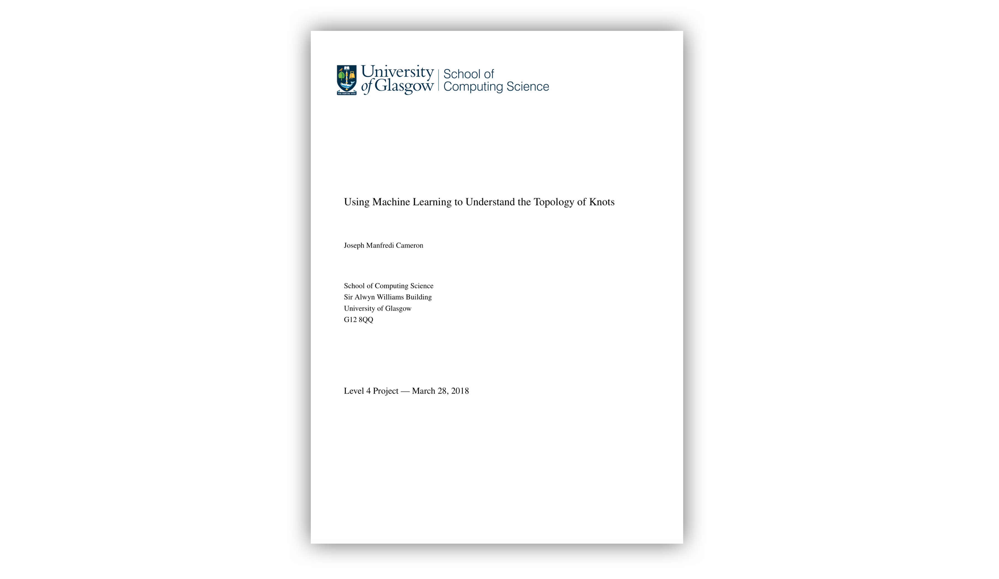
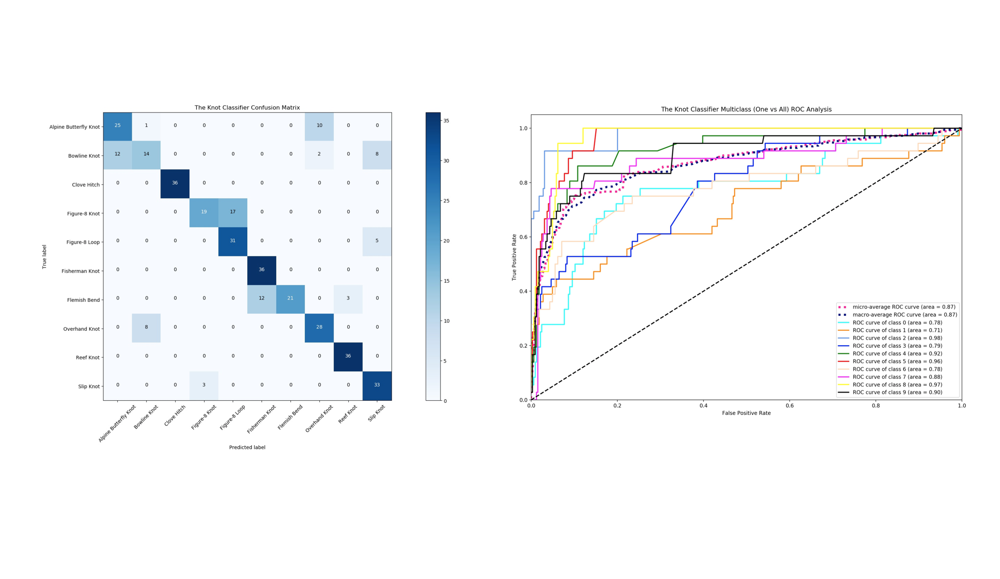
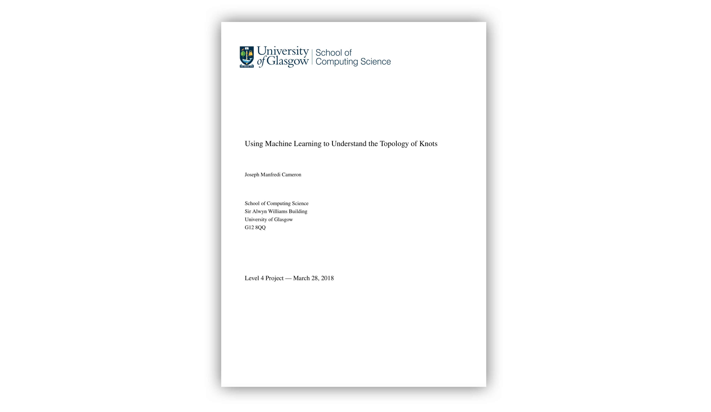
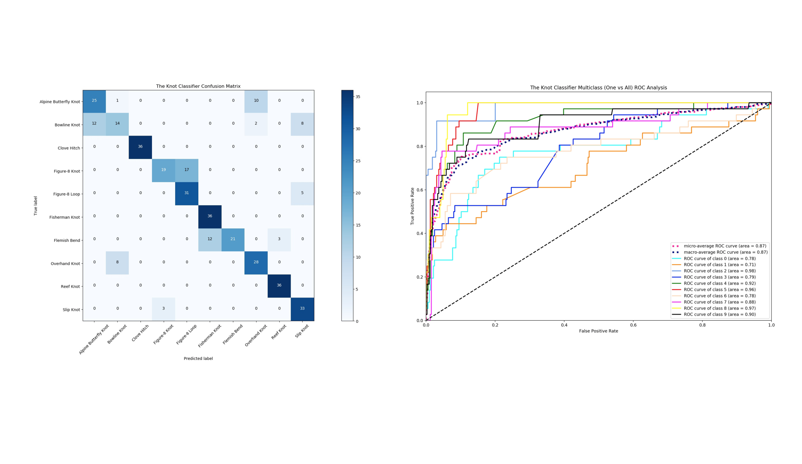

Project Information
- Category: Development, Design, Writing
- Purpose: Honours Dissertation Project
- Project URL: github.com/JoeCameron1/IndividualProject
- Dissertation: See My Dissertation
Using Machine Learning to Understand the Topology of Knots
This project was my individual dissertation project, which I started and completed during my 4th year at the University of Glasgow.
My dissertation which accompanies this project can be downloaded and viewed here.
The aim of this project is to classify knots (knots tied in rope or other materials) based on their topology, from images.
Overall, the project provides the capability to classify ten knots, with the ten knots being: the alpine butterfly knot; the bowline knot; the clove hitch; the figure-8 knot; the figure-8 loop; the fisherman's knot; the flemish bend; the overhand knot; the reef knot; and the slip knot.
Knot classification is achieved via a convolutional neural network implemented in Keras (with a Tensorflow backend).
I created a controlled dataset called 10Knots, and this dataset was used to train and validate the convolutional neural network performing knot classification.
10Knots contains images of these ten knots in differing conditions to help minimise overfitting.
Click here to see 10Knots on Kaggle.
The classification software also provides many useful data visualisation plots such as a t-SNE visualisation plot, multiple training history plots and a confusion matrix plot.
These plots are extremely useful for evaluating the knot classifier, and some of them can be seen above.
Furthermore, I developed an iOS application to serve as an interface to utilise the trained Keras convolutional neural network to predict knots in real time via an iPhone's camera.
A screenshot of the iOS application can be seen above and there is a video that shows the app in action below.
The application's interface is seamless and very intuitive to use, the user simply points their phone's camera at a knot and receives the top-3 classifications (with their certainties) instantaneously.
I kept the user interface simple on purpose, as I wanted the user to interact with a seemingly complicated and foreign neural network in an understandable and relatable way.
The iOS application is called 'The Knot Classifier', and it was coded in Swift.
Below is a video where I detail the implementation of the whole project and provide a demonstration of the Knot Classifier iOS application.
Technologies Used:
- Python
- Keras
- Tensorflow
- Swift
- Xcode
- Core ML
Skills Demonstrated:
- Creativity
- Organisation
- Software Development
- Interaction Design
- Deep Learning
- Data Science
- Data Visualisation
- Academic Writing